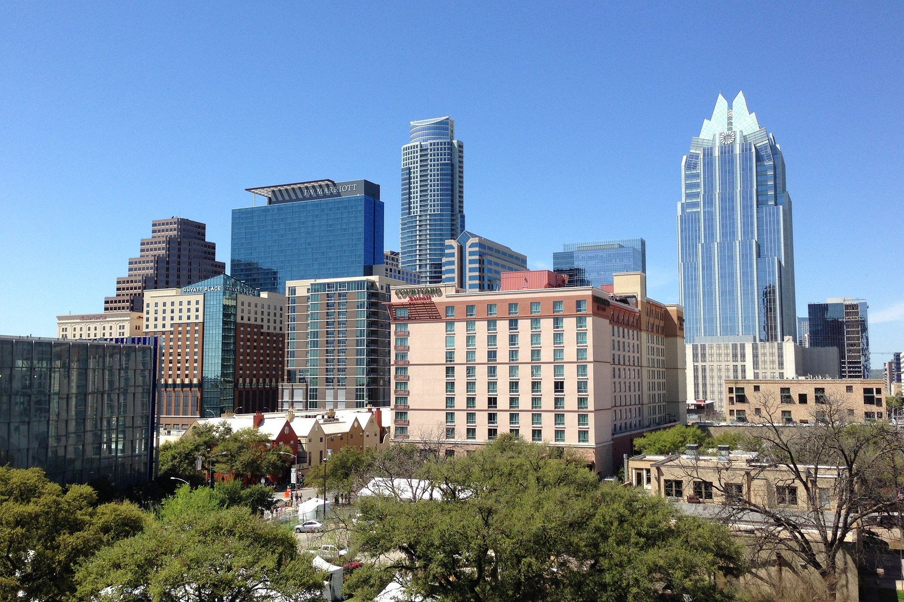

Grew up in Northern California. At a young age was heavly involved in sports but mainly lacrosse from 5th grade all the way through highschool.
Always loved working on computers at young age, was always outdoors playing sports, skateboarding, or snowboarding. When I got older I moved to Austin texas to work in the restaurant industry.
For 8 years I served, bartended, and helped manage restaurants. I always wanted to pursure a career in IT. In 2019 I decided that I was going to go back to school to pursure my dreams.
I finally enrolled at Wake Tech in the Cyber Security Program. I have enjoyed every step of the way and look forward to expanding my knowlege.
